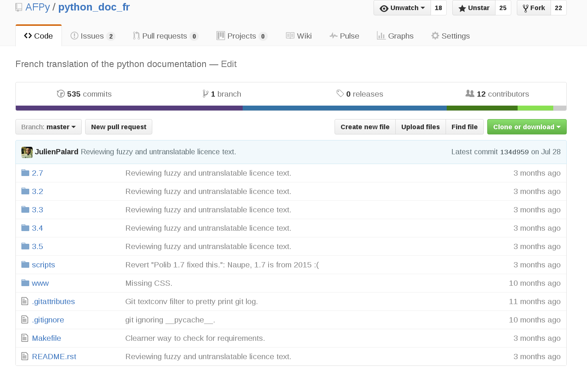
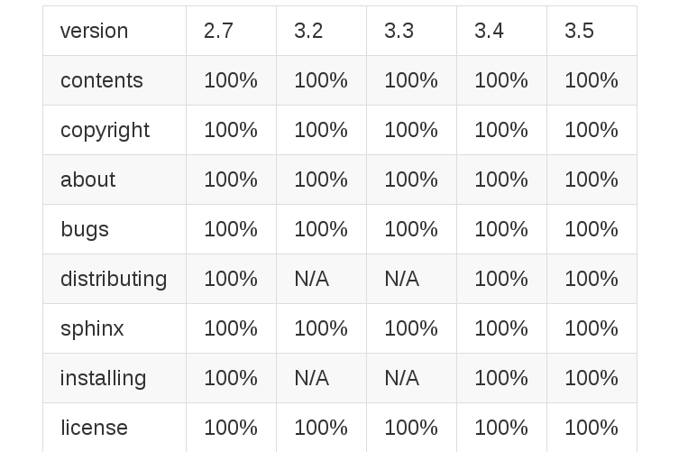
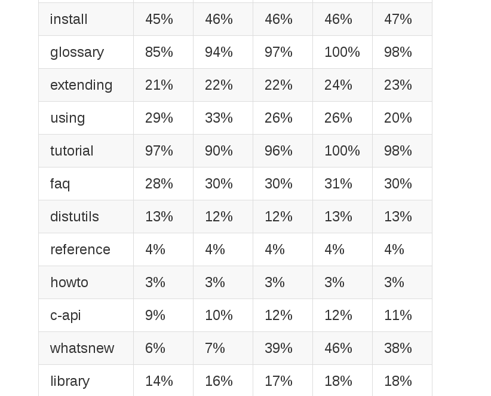

<!doctype html>
<html>
  <head>
    <meta charset="utf-8">
    <meta name="viewport" content="width=device-width, initial-scale=1.0, maximum-scale=1.0, user-scalable=no">

    <title>Traduction de la doc de Python.</title>

    <link rel="stylesheet" href="css/reveal.css">
    <link rel="stylesheet" href="css/theme/black.css">

    <!-- Theme used for syntax highlighting of code -->
    <link rel="stylesheet" href="lib/css/zenburn.css">

    <!-- Printing and PDF exports -->
    <script>
      var link = document.createElement( 'link' );
      link.rel = 'stylesheet';
      link.type = 'text/css';
      link.href = window.location.search.match( /print-pdf/gi ) ? 'css/print/pdf.css' : 'css/print/paper.css';
      document.getElementsByTagName( 'head' )[0].appendChild( link );
    </script>
  </head>
  <body>
    <div class="reveal">
      <div class="slides">
        <section data-markdown>
          <script type="text/template">
            # docs.python.org/fr
            ## Julien Palard
          </script>
        </section>
        <section data-markdown>
          <script type="text/template">
            # Les traductions


            - https://afpy.org/doc/python/3.6
            - http://docs.python.jp/3/
            - http://docs.python.org.ar/tutorial/3/real-index.html
            - http://transifex.com/python-doc/
            - http://python-lab.ru/documentation/index.html

          </script>
        </section>
        <section data-markdown>
          <script type="text/template">
            ## Historique du projet

            - 2012 : Naissance du projet
            - 2013 : ø
            - 2014 : ø
            - 2015 : Projet relancé (vers décembre)
            - 2016 : +20% traduit !!
            - 2016 : Idée de docs.python.org/fr/ (bpo-26546)
            - 2016 : Thread "docs.python.org/fr/?" sur python-ideas
            - 2017 : PEP 545
          </script>
        </section>
        <section>
          <section data-markdown>
            <script type="text/template">
              ## Pourquoi
              
            </script>
          </section>
          <section data-markdown>
            <script type="text/template">
              - Je m'ennuie dans le RER, alors je traduis, et vous ?
              - C'est un outil d'évangélisation
              - La langue ne devrait pas être un frein pour apprendre le Python, peu importe l'age et le niveau de scolarisation
              - Il n'y a aucune raison à ce que l'anglais soit un prérequis de Python, au contraire, Python pourrait être un moyen de se familiariser avec l'anglais
            </script>
          </section>
          <section data-markdown>
            <script type="text/template">
              ## Github
              https://github.com/AFPy/python_doc_fr/
              
            </script>
          </section>
        </section>
        <section>
          <section data-markdown>
            <script type="text/template">
              ## Progression

              - 2016-01: 6%
              - 2016-02: 11%
              - 2016-03: 14%
              - 2016-04: 22%
              - 2016-05: 23%
              - 2016-06: Tentative de merge avec docs.python.org

              12 contributeurs depuis 2012
            </script>
          </section>
          <section data-markdown>
            <script type="text/template">
              ## Github
              Progression
              
            </script>
          </section>
          <section data-markdown>
            <script type="text/template">
              ## Github
              Progression
              
            </script>
          </section>
        </section>
        <section>
          <section data-markdown>
            <script type="text/template">
              ## Comment on fait
              ```
              $ git clone https://github.com/AFPy/python_doc_fr.git
              ```
              …
              ```
              $ poedit 3.6/library.po
              ```
              …
              ```
              $ make
              ```
            </script>
          </section>
          <section data-markdown>
            <script type="text/template">
              
            </script>
          </section>
        </section>
        <section data-markdown>
          <script type="text/template">
            ## docs.python.org/fr/

            En progrès:
            - https://github.com/python/docsbuild-scripts/pull/1
            - https://bugs.python.org/issue26546
            - https://www.python.org/dev/peps/pep-0545/
          </script>
        </section>
        <section>
          <section data-markdown>
            <script type="text/template">
              ## Et après ?

              - https://docs.python.org/jp/
              - https://docs.python.org/es/
              - https://docs.python.org/zh-cn/
              - …
            </script>
          </section>
          <section data-markdown>
            <script type="text/template">
              ## Et après ?

              Travailler sur quelques améliorations de sphinx-doc comme:

              - Annoncer clairement les paragraphes non-traduits: https://github.com/sphinx-doc/sphinx/issues/1246).
              - Afficher un avertissement devant les paragraphes pas à jour (fuzzy).
            </script>
          </section>
        </section>
        <section>
          <section data-markdown>
            <script type="text/template">
              ## Mais, maintenant ?

              - https://www.python.org/dev/peps/pep-0545/
            </script>
          </section>
        </section>
      </div>
    </div>

    <script src="lib/js/head.min.js"></script>
    <script src="js/reveal.js"></script>

    <script>
      // More info https://github.com/hakimel/reveal.js#configuration
      Reveal.initialize({
      width: 960,
      height: 700,
      margin: 0.1,
      history: true,

      // More info https://github.com/hakimel/reveal.js#dependencies
      dependencies: [
      { src: 'plugin/markdown/marked.js' },
      { src: 'plugin/markdown/markdown.js' },
      { src: 'plugin/notes/notes.js', async: true },
      { src: 'plugin/highlight/highlight.js', async: true, callback: function() { hljs.initHighlightingOnLoad(); } }
      ]
      });
    </script>
  </body>
</html>
